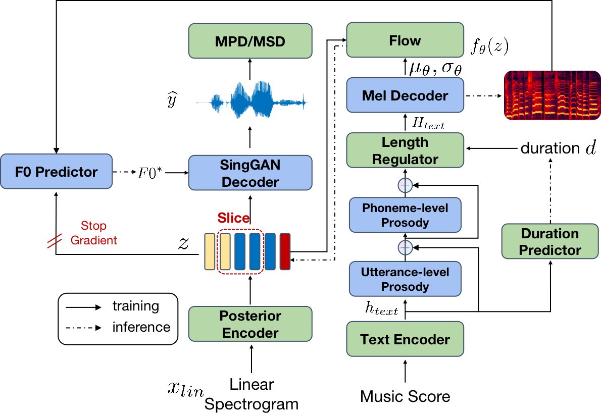
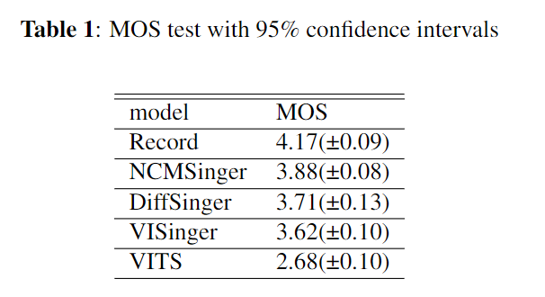

NCMSinger: MEL-CONSTRAINED VITS WITH PROSODY MODELING FOR SINGING VOICE SYNTHESIS

Paper link: XXX.com
Authors
- Peng Li (NetEase Cloud Music) hzlipeng@corp.netease.com
- Huaping Liu* (NetEase Cloud Music) liuhuaping@corp.netease.com
- Yang Bai (NetEase Cloud Music) baiyang03@corp.netease.com
- Xiangyu Zhao (NetEase Cloud Music) zhaoxiangyu01@corp.netease.com
Abstract
Variational inference with adversarial training has been recently applied on speech and singing voice synthesis. Previous research including VITS and VISinger has shown promising results. In this paper, we propose NCMSinger, an end-to-end system with VITS-like architecture for singing voice synthesis. First, we introduce utterance/frame-level prosody to model the acoustic variance in singing voice. Second, we develop a mel decoder to predict mel-spectrogram and the frame-level mean/variance used for constructing prior distribution. L1 loss on predicted mel-spectrogram is added to final loss to guide the training. Finally, we design an F0 predictor and employ F0-driven SingGAN for singing voice reconstruction. Experiments on a female Mandarin singing dataset show that the proposed system produces natural singing voice and outperforms existing SVS systems such as VISinger and DiffSinger. Moreover, NCMSinger converges fast, as shown in ablation studies.
Contents
Audio Samples1.1 Audio Quality
1.2 Complete music score synthesiszed
Ablation Studies
2.1 NCMSinger/Without prosody/Without Mel-Decoder/Without SingGAN
2.2 Convergency
Audio Samples
Audio samples synthesized from different SVS system to compare. And four complete music scores was used to synthesis singing voice by NCMSinger.
Audio Quality
| Record | VITS | VISinger | DiffSinger | DiffSinger+SingGAN | NCMSinger |
|---|---|---|---|---|---|
红豆-王菲
风中有朵雨做的云-孟庭苇
孤勇者-陈奕迅
美丽的草原我的家-德德玛
| Without SingGAN | Without Mel-Decoder | Without prosody | NCMSinger |
|---|---|---|---|
| VISinger 200k | VISinger 600k | NCMSinger 200k | NCMSinger 600k |
|---|---|---|---|